Here's detailed information on what we do, what we find, and what we charge.
Why Get a Sewer Scope?
Sewer Scope Pictures
If there's a non-standard project for which you'd like our services, please contact us for more information.
Cleanouts (how we access the pipe) and our Camera
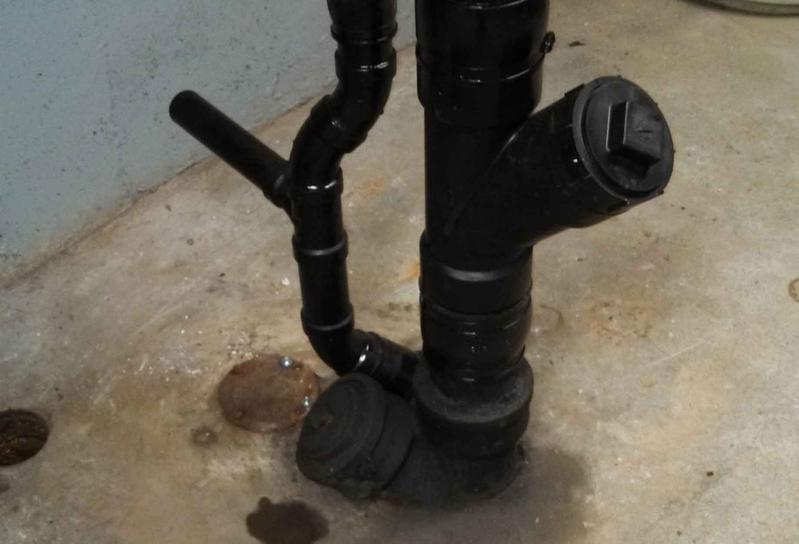
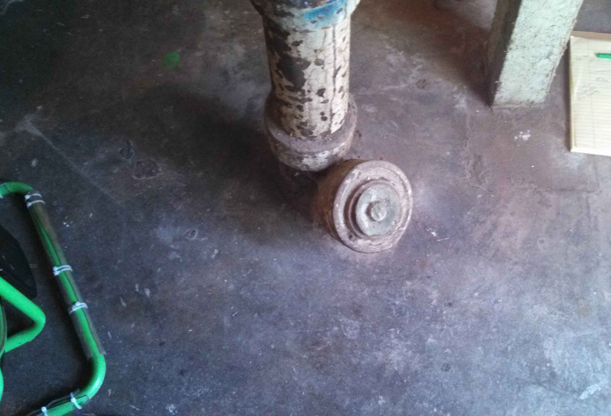
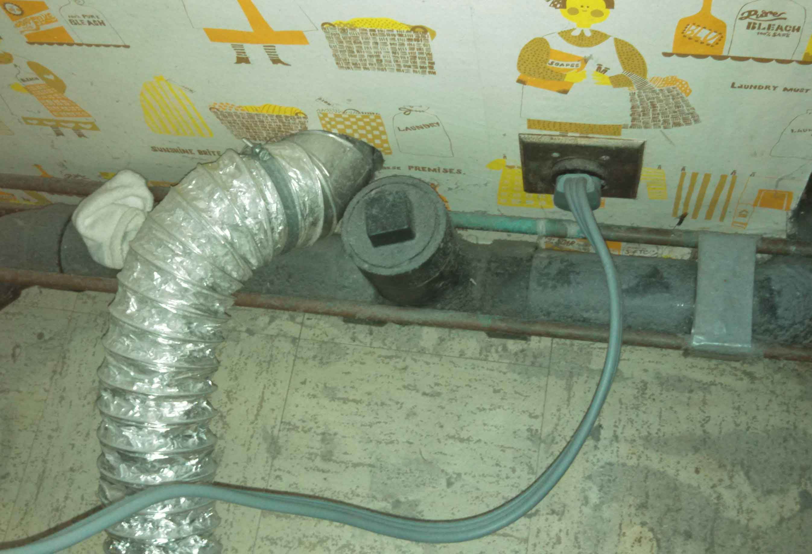
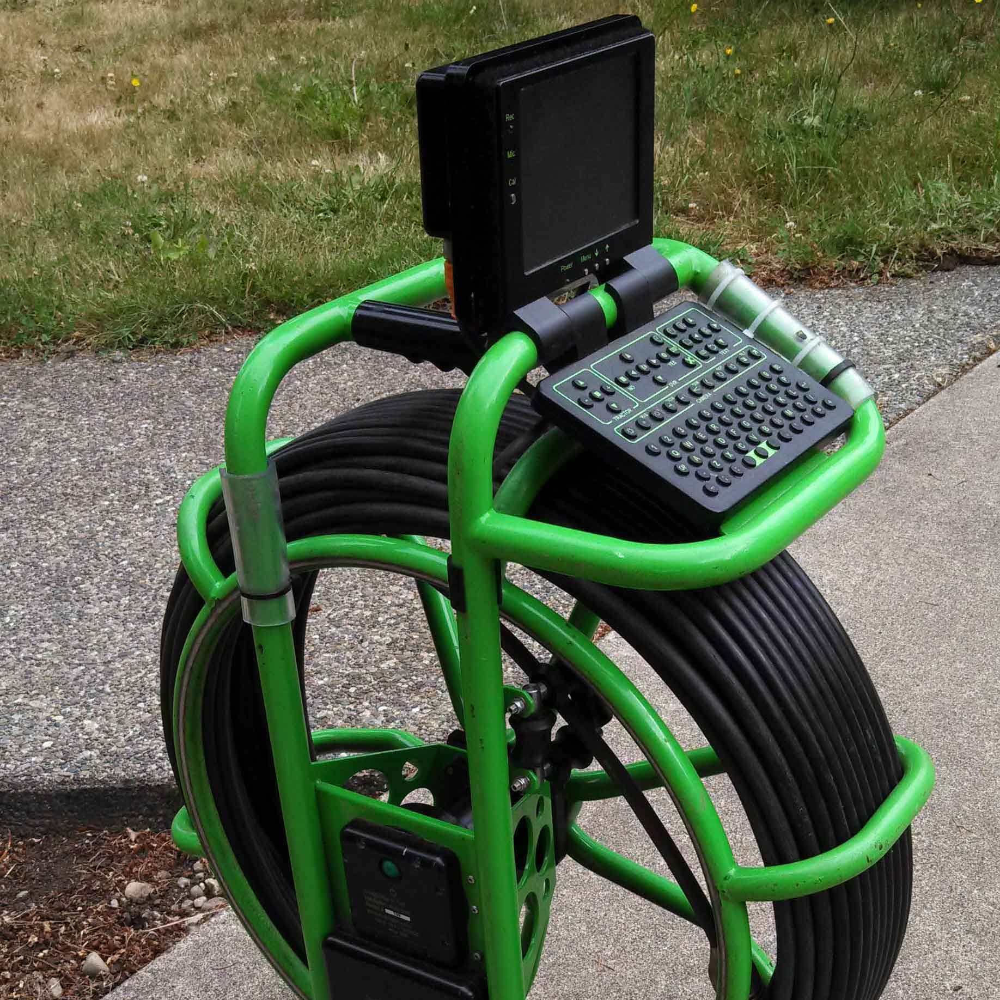
Clean Pipes (the majority of what we find)
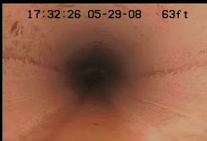
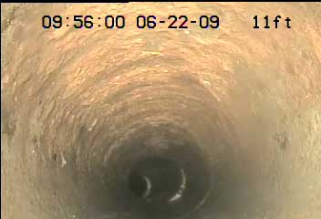
Erosion and Offset
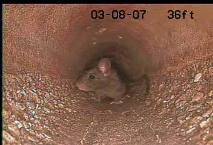
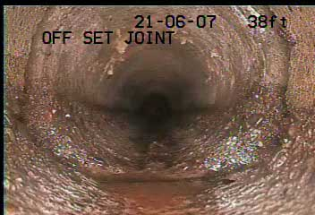
Eroded and Broken Concrete
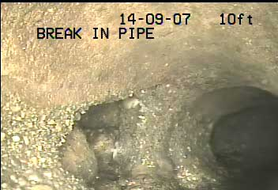
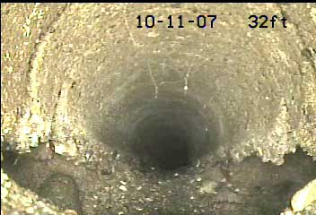
Orangeburg Pipe and Crushed PVC
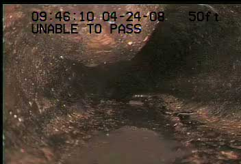
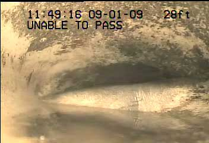
Roots
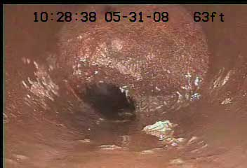
Pierce County & Thurson County Pricing Table
When performing Sewer Scopes inside of the Seattle franchise area, we use Seattle Hydro Physic’s pricing. For for information on Seattle Hydro Physic's prices, please contact Rick de la Mare at (425) 775-8445.
| Full Sewer Scope | Re-Scope 1 | Plumber’s Locate |
|---|---|---|
| If there is no cleanout accessible, we’ll add $35 to gain access through roof vents or toilets ($230 total). | If we re–scope after a repair, we’ll give you this heavily–discounted rate. | This is a service we offer for plumbers. If you don’t need a video or written report, we’ll give you this discounted rate. |
| $215 2 | $150 2 | $175 |
| Sewer Scope (up to 200') | Sewer Scope (up to 200') | Sewer Scope (up to 200') |
| Location Services | Location Services | Location Services |
| Digital Video (or Video CD) | Digital Video (or Video CD) | |
| Written Report | Written Report |
1 Requires that Hydro Physics has already completed a sewer scope on this line.
2 If there is not an accessible cleanout, we’ll charge $35 to access your sewer line through a roof vent or toilet.